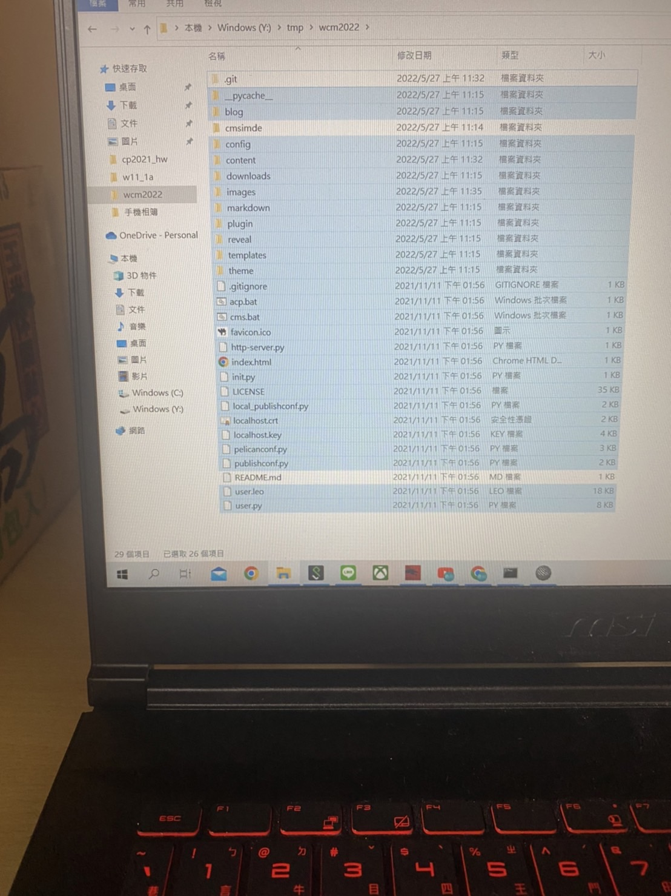

First <<
Previous Next >> About
建立倉儲
建立並登錄GitHub帳號
(Create a new repository from cp2021_hw)
Repository name 填上cp2021_hw(任取)
點下Create repository from template
跑出頁面後複製上方的網址
打開可攜系統的cmd(黑色背景)
輸入cd tmp 按下enter不用我講吧
輸入git clone --recurse-submodules https://github.com/不是用我的(複製的網址).git(.git記得加)
(git clone - 克隆遠端數據庫)
拉東西到資料夾
下載完後輸入cd cp2021_hw
並設定完Personal access tokensg
輸入acp就完成了
輸入pip install pyopenssl (To install pyOpenSSL)
輸入cms
複製上面出現的網址並貼在網頁上面(https://127.0.0.1:9448)
密碼為admin
即可修改近端
修改完畢後點選generate_pages,將頁面改成靜態
開另一個cmd(黑色頁面)
輸入cd tmp\cp2021
輸入git config --global user.email "(Your gmail)"
輸入git config --global user.name "(Your Name)"
並設定完Personal access tokensg
輸入acp "(任意)"
到github倉儲下的Settings
並點選Pages
將Source改成main並Save
即可將改版資料推上遠端
First <<
Previous Next >> About